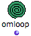
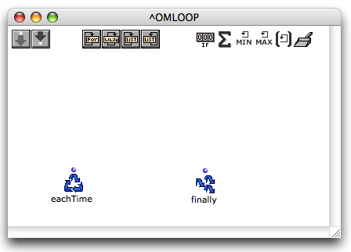
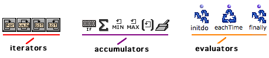
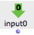
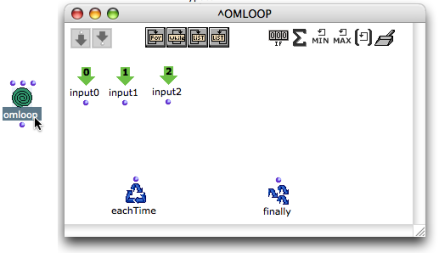
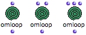
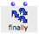
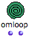

OpenMusic DocumentationHiérarchie de section : OM 6.6 User Manual > Visual Programming II > Iterations: OMLoop > General Features
OpenMusic DocumentationHiérarchie de section : OM 6.6 User Manual > Visual Programming II > Iterations: OMLoop > General Features
Navigation : page précédente | page suivante
Attention, votre navigateur ne supporte pas le javascript ou celui-ci à été désactivé. Certaines fonctionnalités de ce guide sont restreintes.
General Features
|  | The OMLoop module is a specific type of abstraction – or patch. It encloses a number of specialized components, which allow to design iterative programs. Programming takes place in the internal editor of OMLoop. |
OMLoop Editor and Components
Editor
To open the OMLoop editor, double click on the OMLoop box.

The OMLoop editor resembles a patch editor.
Components
OMLoop provides three types of programming components :

iterators : determine and stop the iteration process.
accumulators : gather the result at each step of the iteration in the ongoing process until the iteration is over.
Iterators and accumulators are visible at the top of the OMLoop editor and can be added with a click. The choice of iterators and accumulators depends on the iteration program.
evaluators : trigger the evaluation and return the results, at each step or at the end of the iteration.
The eachtime and finally evaluators are essential components which are displayed by default in the editor. Initdo can be added typing its name in the editor.
Adding Inputs and Outputs
Initially, the OMLoop box has only one output and no input : programming can be done without the use of external data, like with a patch. Additional outputs and inputs can be added using the following procedures. |
Inputs
|  | Inputs transfer incoming data to the programming functions of OMLoop. They are represented green top-down arrow inside the editor. |

The OMLoop editor shows additional inputs, as well as a number of default internal components.

|
To add or delete an input in the OMLoop box,
|
Outputs
OMLoop outputs are managed with another procedure.
The finally evaluator represents the visible output(s) of OMLoop. It returns the results of the iteration. Outputs can therefore be added and deleted by adding or deleting optional inputs to and from Finally. |
|
 |
To add or delete inputs to finally :
|
 |
Outputs also represented on the OMLoop icon once added. |
About Evaluators :
About Evaluation in OMLoops
An OMLoop can't be evaluated from the inside of its editor. It will be ineffective until its internal program is defined correctly.
Do not evaluate it before it is completed : an infinite loop might get OM stuck for a while...
Références :
Plan :
Navigation : page précédente | page suivante
A propos...(c) Ircam - Centre Pompidou